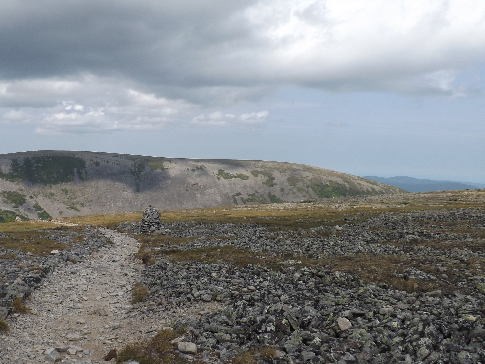

Gallerie d'images des Monts Chic-Chocs

Les monts Chic-Choc

Trace de caribou dans la forêt

Randonneurs en action

Cairn servant à se repérer et suivre les sentiers adéquatement.

Vue du haut du mont Jacques-Cartier

Vue du haut du mont Jacques-Cartier

Pile de roche servant à se repérer et suivre les sentiers adéquatement.

Vue du haut du mont Jacques-Cartier

Vue du haut du mont Jacques-Cartier